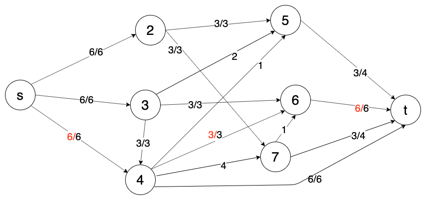
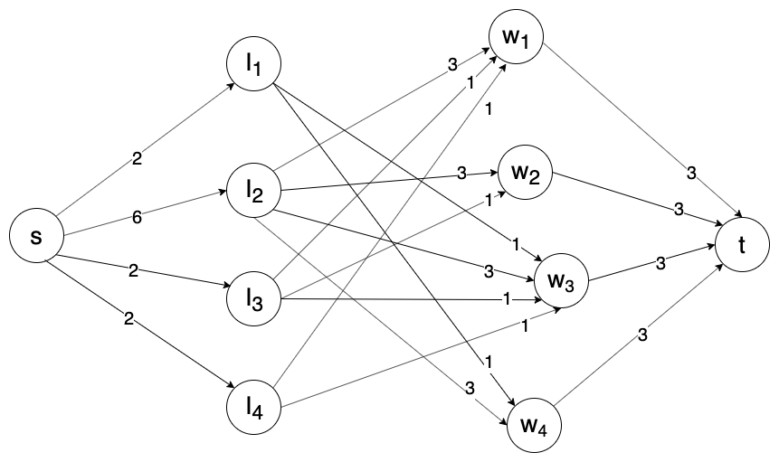

28. Понятие потока в сети. Задача о максимальном потоке. Алгоритмы Форда-Фалкерсона и Карзанова. Теорема о максимальном потоке и минимальном разрезе. Сведение задачи составления допустимого расписания с прерываниями для многопроцессорной системы при заданных директивных интервалах к задаче о максимальном потоке в сети.
Сеть состоит из ориентированного графа G=(V={1,…,n}, A={(i,j)},i,j∈V) с двумя выделенными вершинами s - источник и t - сток. Каждая дуга обладает пропускной способностью uij. (i,j)∈A:uij>0
Поток: fij,(i,j)∈A и его свойства:
- fij≥0
- fij≤uij ∀(i,j)∈A
- j:(j,i0)∈A∑fji0−j:(i0,j)∈A∑fi0j=0, ∀i0∈V,i0=s,t - сохранение потока
(s,j)∈A∑fsj−(j,s)∈A∑fjs=M(f) - величина потока (Суммарный поток выходящий из истока минус суммарный поток входящий в исток)
Задача о максимальном потоке
Необходимо найти поток fi,j′, такой что M(f′)=fijmaxM(f), то есть величина потока максимальна.
Пример сети с построенным максимальным потоком

Алгоритм Форда-Фалкерсона
Пусть π - это путь
по прямой дуге: δij=uij−fij>0 fij=fij+δ(π)
По обратной дуге: δkj=fkj>0 fkj=fkj−δ(π)
δ(π)=(i,j)∈πminδi,j
Увеличивающий путь - это путь π (последовательность дуг из истока в сток), для которого величина δ(π)>0, которая определяется следующим образом: для каждой дуги (i,j) входящей в путь π вычисляется величина δij={uij−fij>0fji>0,прямая дуга,обратная дуга и δ(π)=(i,j)∈πminδij.
неформально это путь из истока в сток, вдоль которого можно увеличить поток на некоторую величину.
Про обратную дугу - можно забирать поток назад
Алгоритм
- fij - начальный поток (fij=0)
- Увеличить путь π на δ(π) [итеративно]
- Если нет увеличивающего пути - остановка. [нашли максимальный поток]
Пусть uij∈N - закончится, так как как минимум на 1 каждый раз увеличивается, поэтому алгоритм не зациклится.
Алгоритм Карзанова
G(f)=(V,A(f)) - остаточная сеть
A(f):
- (i,j)∈A,fij<uij (i,j)→A(f) vij=uij−fij
- (i,j)∈A,fij>0 (j,i)→A(f) vji=fij
Слоистая сеть G∗(f)=(V∗,A∗(f)) включает в себя множество всех кратчайших путей (по числу дуг) из источника в сток по слоям:
Нулевой слой V0={s}
Первый слой V1={i:(s,i)∈A(f)}
Второй слой V2={j:(j,i)∈A(f),i∈V1,j∈/V1∪V0 и так далее, на последнем слое может быть не только сток, в промежуточных может быть тупиковые, поэтому надо убирать висячие узлы как только дошли до стока и инцидентные им дуги.
Тупиковый поток - поток, относительно которого нет прямого увеличивающего пути (содержит только прямые дуги) из источника в сток.
Алгоритм
- Начальный нулевой поток в G
- Построить G(f) - остаточную сеть
- Если нет прямого пути из s в t, то стоп f - максимальный поток
- Построить G∗(f) - слоистую сеть
- Построить тупиковый поток в G∗(f) - gij
- Изменить потоки: (i,j)∈A∗(f)- прямая fij=fij+gij , для обратных дуг (i,j)∈A∗(f) fij=fij−gij
- Перейти на 2 шаг
Разрез: , V=Vc∪Vc, Vc∩Vc=∅, s∈Vc, t∈Vc
u(Vc,Vc)=i∈Vc,j∈Vc∑uij - пропускная способность разреза
Разрез с минимальной пропускной способностью называется минимальным разрезом.
Теорема о максимальном потоке и минимальном разрезе. Величина максимального потока в сети равна величине минимального разреза в сети.
Задача составления допустимого расписания с прерываниями для многопроцессорной системы:
Пусть имеется m - процессоров. Задано N={1,…,n} - число работ и для каждой работы заданы ti - длительность , (bi,fi] - директивный интервал i-ой работы (bi<fi и ti≤fi−bi). Во время выполнения работ допускаются прерывания и переключения. Требуется ответить на вопрос существует ли допустимое расписание и как его построить.
Сведение задачи к задачи поиска максимального потока в сети:
Обозначим y0<y1<y2<…yp - все упорядоченные значения bi,fi
Составим отрезки Ij=(yj−1,yj],j=1,p
Сеть будет состоять из узлов s, t , Ij, wi
Δj=yj−yj−1 - длительность интервала Ij
Добавляем дуги (s,Ij) с пропускной способностью mΔj
Добавляем дуги (Ij,wi), если Ij⊂(bi,fi] пропускной способностью Δj
Добавляем дуги (wi,s) пропускной способностью ti
Пример сети для задачи при m=2
Раб.1234bi1100fi6564ti3333
I1=[0,1],I2=[1,4],I3=[4,5],I4=[5,6]

Теорема. Допустимое расписание существует, тогда и только тогда, когда Максимальный поток в G насыщает все выходные дуги.
Как можно искать увеличивающий путь
Есть состояния у каждого узла : Н,ПН,ПП - непомеченный, помеченный непросмотренный, помеченный просмотренный
Метим следующие для рассмотрения вершины по которым теоретически можно получить увеличивающий путь
- S [-], S - ПН
- Если нет ПН, то останавливаемся (нет увеличивающих путей)
- i−ПН, ∀j−Н,(i,j)∈A,fij<uij - метим [i], j−ПН
i−ПН, ∀j−Н,(i,j)∈A,fij>0 - метим [i], j−ПН
далее i−ПП
- Если t−Н, то переходим на шаг 2
Если t−П - построить увеличивающий путь от истока к стоку
Как строить тупиковый поток
i∈V∗(f),i=s,t
a(i)=min{(j,i)∈A∗(f)∑vji,(j,i)∈A∗(f)∑vij} - пропускная способность узла
a(s)=(s,j)∈A∗(f)∑vsj
a(s)=(j,s)∈A∗(f)∑vjt
i0 - самый слабый узел a(i0)=i∈V∗(f)mina(i)
Выбираем его
ai0 - будем проталкивать поток от i0 до стока и до истока (можно по разным дугам, но разрешена только одна недонасыщенная)
После этого вершина i0 исключается из сети и все полностью насыщенные дуги (если дуги были не полностью насыщены и остались в сети то им изменяем пропускную способность)
и так сначала, пока не останется тупиковый поток